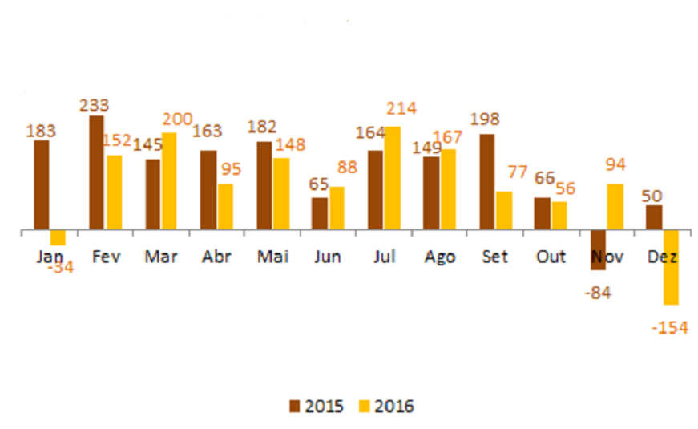
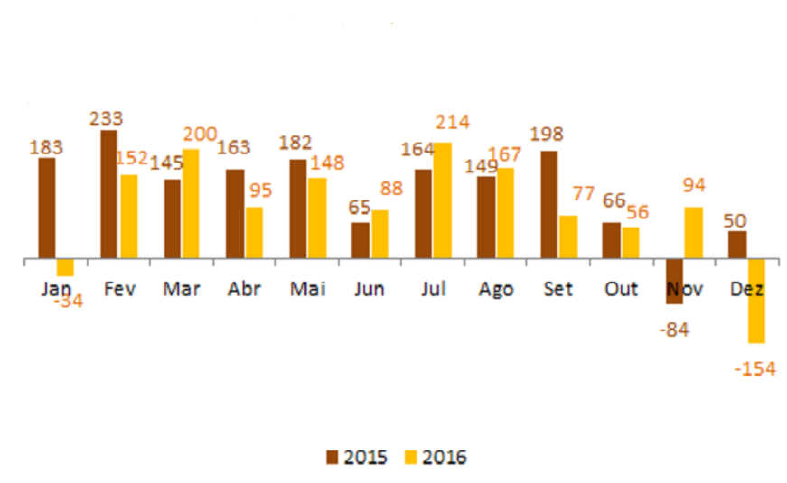

CUOTA DE MERCADO EN LOS OPERADORES MÓVILES ADICIONES NETAS MENSUALES TELEFONÍA CELULAR (MILLONES)


ADICIONES NETAS MENSUALES TELEFONÍA FIJA (MILES) ADICIONES NETAS MENSUALES DE BANDA ANCHA (MILES)
 

Fuente:Anatel (2016)
ENTIDADES REGULADORAS
Ministerio de Ciencia, Tecnología e Innovación. (MCTI)
Agencia Nacional de Telecomunicaciones. (ANATEL - TELECO)
Es el regulador de las telecomunicaciones en Brasil. Fue creado por la Ley General de Telecomunicaciones (Ley 9.472, de 16.07.97).
Ir al Sitio Web
Es el órgano máximo de la Administración federal de Brasil responsable de la formulación e implementación de la Política Nacional de Ciencia, Tecnología e Innovación.
Ir al Sitio Web